
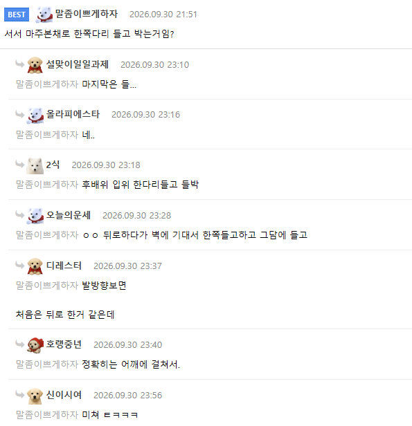
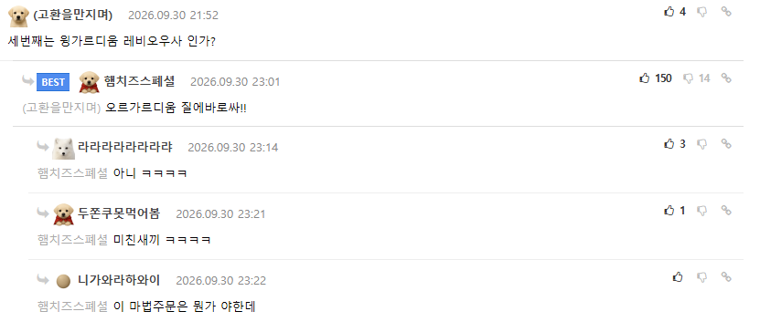

오...
본편보다 외전 수위들이 ㅎㄷㄷ하더라
스토리 만드느라 씬에 신경을 못썻던걸 외전에서 집중몰빵 ㅋㅋㅋㅋ
외전만보면 되나요? 근데 해리포터 안봤는데 봐도 이해하는데 문제없음?
그럴거면 그냥 야설을 보시는게
그냥 야설은 TS말포이가 아니잖아요
아니지 스토리를 봐야 외전이 맛있는거지
간장게장이 맛있다지만 그것만 먹으면 너무 짜잖아 옆에 밥이 있어야 진정한 간장게장의 맛을 알 수 있는 법
들박..파란선.. 파란선이 필요하다
롤링 할매 칠공분혈하겠네
어쨌든 싸게 만들었죠?
ㅗㅜㅑ
와ㅋㅋㅋㅋㅋㅋㅋㅋㅋㅋ
이게 생체 ai지
내 뇌에서 장면들이 마구마구 생성되고있어
ㅅㅂ 주문 ㅋㅋㅋ
1.Doggy
2.One leg up standing
3.Standing cow girl
full nelson
작가가 고속도루라고..? 믿고보러간다
아 존나 맛있다 ㅅㅂ
이거 물자국까지 보였던 패러디 짤이 있었던거 같은데 사실 내 상상이였고 발자국밖에 없었나?
어흐어흐
들박